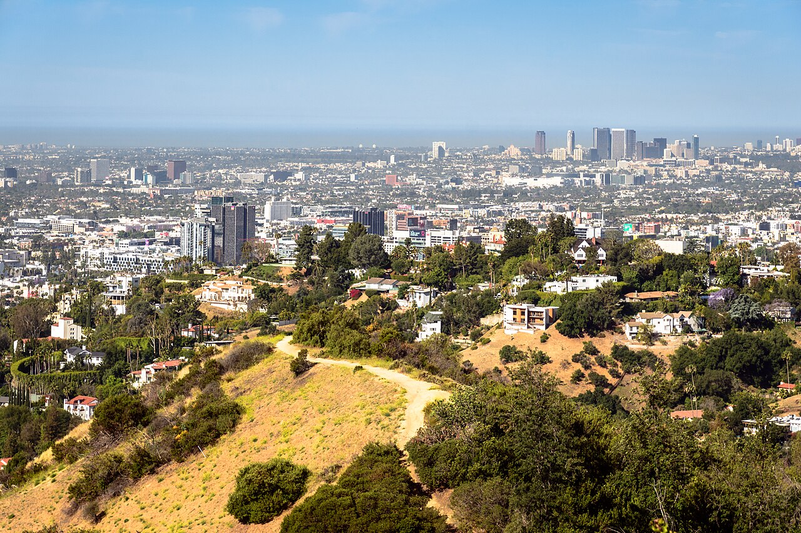
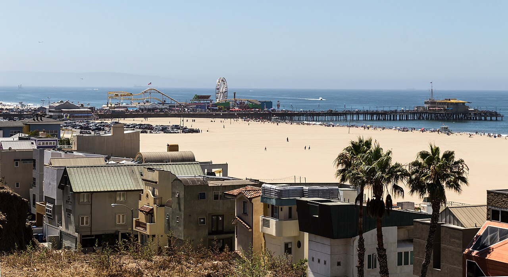

3. Лос-Анджелес, Каліфорнія, США

Коротко про місто
Лос-Анджелес — друге за населенням місто США, де живе близько 3,8 мільйона людей. Це центр світової кіноіндустрії, місто з теплим кліматом майже цілий рік і довгими пляжами на узбережжі Тихого океану.
Чому я обрав це місто
Я хотів би жити в Каліфорнії, щоб після навчання чи роботи просто їхати до океану — у Санта-Моніку або Малібу. Лос-Анджелес приваблює мене теплом, простором і тим, що тут поруч гори, пляжі та IT-компанії Південної Каліфорнії.

Цікаві факти
- Знак Hollywood встановили в 1923 році; спочатку напис був «Hollywoodland».
- Пірс Санта-Моніки відкрили в 1909 році, і саме біля нього закінчується легендарна Route 66.
- У 2028 році Лос-Анджелес утретє прийме літні Олімпійські ігри (після 1932 та 1984 років).
- З обсерваторії Гріффіта видно і центр міста, і знак Hollywood.
Визначні місця
- Пляж і пірс Санта-Моніки
- Пляжі Малібу
- Обсерваторія Гріффіта
- Знак Hollywood
- Алея слави на Голлівудському бульварі
- Музей Гетті
Моя оцінка
9,5 / 10 — місто, де я хотів би жити.
Більше інформації: Лос-Анджелес у Вікіпедії